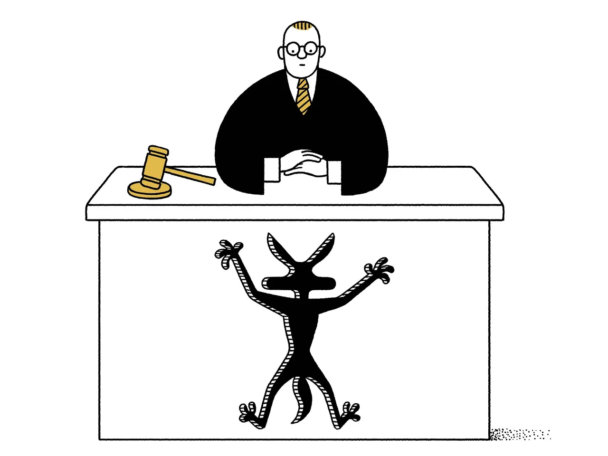

By Ian Frazier
February 19, 1990

IN THE UNITED STATES DISTRICT COURT, SOUTHWESTERN DISTRICT, TEMPE, ARIZONA CASE NO. B19294, JUDGE JOAN KUJAVA, PRESIDING WILE E. COYOTE, Plaintiff -v.- ACME COMPANY, Defendant
Opening Statement of Mr. Harold Schoff, attorney for Mr. Coyote: My client, Mr. Wile E. Coyote, a resident of Arizona and contiguous states, does hereby bring suit for damages against the Acme Company, manufacturer and retail distributor of assorted merchandise, incorporated in Delaware and doing business in every state, district, and territory. Mr. Coyote seeks compensation for personal injuries, loss of business income, and mental suffering caused as a direct result of the actions and/or gross negligence of said company, under Title 15 of the United States Code, Chapter 47, section 2072, subsection (a), relating to product liability.
Mr. Coyote states that on eighty-five separate occasions he has purchased of the Acme Company (hereinafter, “Defendant”), through that company’s mail-order department, certain products which did cause him bodily injury due to defects in manufacture or improper cautionary labelling. Sales slips made out to Mr. Coyote as proof of purchase are at present in the possession of the Court, marked Exhibit A. Such injuries sustained by Mr. Coyote have temporarily restricted his ability to make a living in his profession of predator. Mr. Coyote is self-employed and thus not eligible for Workmen’s Compensation.
Mr. Coyote states that on December 13th he received of Defendant via parcel post one Acme Rocket Sled. The intention of Mr. Coyote was to use the Rocket Sled to aid him in pursuit of his prey. Upon receipt of the Rocket Sled Mr. Coyote removed it from its wooden shipping crate and, sighting his prey in the distance, activated the ignition. As Mr. Coyote gripped the handlebars, the Rocket Sled accelerated with such sudden and precipitate force as to stretch Mr. Coyote’s forelimbs to a length of fifty feet. Subsequently, the rest of Mr. Coyote’s body shot forward with a violent jolt, causing severe strain to his back and neck and placing him unexpectedly astride the Rocket Sled. Disappearing over the horizon at such speed as to leave a diminishing jet trail along its path, the Rocket Sled soon brought Mr. Coyote abreast of his prey. At that moment the animal he was pursuing veered sharply to the right. Mr. Coyote vigorously attempted to follow this maneuver but was unable to, due to poorly designed steering on the Rocket Sled and a faulty or nonexistent braking system. Shortly thereafter, the unchecked progress of the Rocket Sled brought it and Mr. Coyote into collision with the side of a mesa.
Paragraph One of the Report of Attending Physician (Exhibit B), prepared by Dr. Ernest Grosscup, M.D., D.O., details the multiple fractures, contusions, and tissue damage suffered by Mr. Coyote as a result of this collision. Repair of the injuries required a full bandage around the head (excluding the ears), a neck brace, and full or partial casts on all four legs.
Hampered by these injuries, Mr. Coyote was nevertheless obliged to support himself. With this in mind, he purchased of Defendant as an aid to mobility one pair of Acme Rocket Skates. When he attempted to use this product, however, he became involved in an accident remarkably similar to that which occurred with the Rocket Sled. Again, Defendant sold over the counter, without caveat, a product which attached powerful jet engines (in this case, two) to inadequate vehicles, with little or no provision for passenger safety. Encumbered by his heavy casts, Mr. Coyote lost control of the Rocket Skates soon after strapping them on, and collided with a roadside billboard so violently as to leave a hole in the shape of his full silhouette.
Mr. Coyote states that on occasions too numerous to list in this document he has suffered mishaps with explosives purchased of Defendant: the Acme “Little Giant” Firecracker, the Acme Self-Guided Aerial Bomb, etc. (For a full listing, see the Acme Mail Order Explosives Catalogue and attached deposition, entered in evidence as Exhibit C.) Indeed, it is safe to say that not once has an explosive purchased of Defendant by Mr. Coyote performed in an expected manner. To cite just one example: At the expense of much time and personal effort, Mr. Coyote constructed around the outer rim of a butte a wooden trough beginning at the top of the butte and spiralling downward around it to some few feet above a black X painted on the desert floor. The trough was designed in such a way that a spherical explosive of the type sold by Defendant would roll easily and swiftly down to the point of detonation indicated by the X. Mr. Coyote placed a generous pile of birdseed directly on the X, and then, carrying the spherical Acme Bomb (Catalogue # 78-832), climbed to the top of the butte. Mr. Coyote’s prey, seeing the birdseed, approached, and Mr. Coyote proceeded to light the fuse. In an instant, the fuse burned down to the stem, causing the bomb to detonate.
In addition to reducing all Mr. Coyote’s careful preparations to naught, the premature detonation of Defendant’s product resulted in the following disfigurements to Mr. Coyote:
We come now to the Acme Spring-Powered Shoes. The remains of a pair of these purchased by Mr. Coyote on June 23rd are Plaintiff’s Exhibit D. Selected fragments have been shipped to the metallurgical laboratories of the University of California at Santa Barbara for analysis, but to date no explanation has been found for this product’s sudden and extreme malfunction. As advertised by Defendant, this product is simplicity itself: two wood-and-metal sandals, each attached to milled-steel springs of high tensile strength and compressed in a tightly coiled position by a cocking device with a lanyard release. Mr. Coyote believed that this product would enable him to pounce upon his prey in the initial moments of the chase, when swift reflexes are at a premium.
To increase the shoes’ thrusting power still further, Mr. Coyote affixed them by their bottoms to the side of a large boulder. Adjacent to the boulder was a path which Mr. Coyote’s prey was known to frequent. Mr. Coyote put his hind feet in the wood-and-metal sandals and crouched in readiness, his right forepaw holding firmly to the lanyard release. Within a short time Mr. Coyote’s prey did indeed appear on the path coming toward him. Unsuspecting, the prey stopped near Mr. Coyote, well within range of the springs at full extension. Mr. Coyote gauged the distance with care and proceeded to pull the lanyard release.
At this point, Defendant’s product should have thrust Mr. Coyote forward and away from the boulder. Instead, for reasons yet unknown, the Acme Spring-Powered Shoes thrust the boulder away from Mr. Coyote. As the intended prey looked on unharmed, Mr. Coyote hung suspended in air. Then the twin springs recoiled, bringing Mr. Coyote to a violent feet-first collision with the boulder, the full weight of his head and forequarters falling upon his lower extremities.
The force of this impact then caused the springs to rebound, whereupon Mr. Coyote was thrust skyward. A second recoil and collision followed. The boulder, meanwhile, which was roughly ovoid in shape, had begun to bounce down a hillside, the coiling and recoiling of the springs adding to its velocity. At each bounce, Mr. Coyote came into contact with the boulder, or the boulder came into contact with Mr. Coyote, or both came into contact with the ground. As the grade was a long one, this process continued for some time.
The sequence of collisions resulted in systemic physical damage to Mr. Coyote, viz., flattening of the cranium, sideways displacement of the tongue, reduction of length of legs and upper body, and compression of vertebrae from base of tail to head. Repetition of blows along a vertical axis produced a series of regular horizontal folds in Mr. Coyote’s body tissues—a rare and painful condition which caused Mr. Coyote to expand upward and contract downward alternately as he walked, and to emit an off-key, accordion-like wheezing with every step. The distracting and embarrassing nature of this symptom has been a major impediment to Mr. Coyote’s pursuit of a normal social life.
As the Court is no doubt aware, Defendant has a virtual monopoly of manufacture and sale of goods required by Mr. Coyote’s work. It is our contention that Defendant has used its market advantage to the detriment of the consumer of such specialized products as itching powder, giant kites, Burmese tiger traps, anvils, and two-hundred-foot-long rubber bands. Much as he has come to mistrust Defendant’s products, Mr. Coyote has no other domestic source of supply to which to turn. One can only wonder what our trading partners in Western Europe and Japan would make of such a situation, where a giant company is allowed to victimize the consumer in the most reckless and wrongful manner over and over again.
Mr. Coyote respectfully requests that the Court regard these larger economic implications and assess punitive damages in the amount of seventeen million dollars. In addition, Mr. Coyote seeks actual damages (missed meals, medical expenses, days lost from professional occupation) of one million dollars; general damages (mental suffering, injury to reputation) of twenty million dollars; and attorney’s fees of seven hundred and fifty thousand dollars. Total damages: thirty-eight million seven hundred and fifty thousand dollars. By awarding Mr. Coyote the full amount, this Court will censure Defendant, its directors, officers, shareholders, successors, and assigns, in the only language they understand, and reaffirm the right of the individual predator to equal protection under the law. ♦
.
Published in the print edition of the February 26, 1990, issue.
Ian Frazier, a staff writer at The New Yorker, is the author of “Paradise Bronx: The Life and Times of New York’s Greatest Borough.”
.